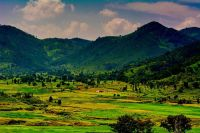
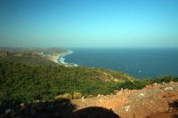
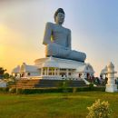
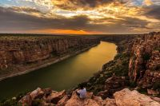
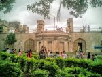
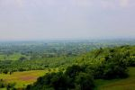
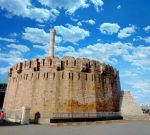

TOURIST PLACES TO VISIT IN ANDHRA PRADESH

Araku Valley
Araku Valley, located in the Eastern Ghats of Andhra Pradesh, is known for its stunning landscapes and coffee plantations. The valley is home to indigenous tribal communities and offers a peaceful escape with its natural beauty and cool climate. It's famous for its organic coffee, which is grown in the fertile soils of the region.

Vishakhapatnam
Visakhapatnam, or Vizag, is a coastal city in Andhra Pradesh known for its picturesque beaches and thriving port. It is an industrial hub with a focus on shipbuilding, steel, and petroleum industries. The city also offers rich cultural heritage, with attractions like the Submarine Museum and Kailasagiri hilltop.

Amaravathi
Amaravati, located in Andhra Pradesh, is the proposed capital city of the state. It holds historical significance as the site of the ancient Amaravati Stupa, an important Buddhist heritage site. The city is being developed as a modern administrative and cultural center, with ambitious plans for infrastructure and urban development.

Gandikota
Gandikota, often called the "Grand Canyon of India," is a historic fort town in Andhra Pradesh, known for its striking landscapes and rugged cliffs. The Gandikota Fort, built in the 12th century, offers a glimpse into the region’s rich history with its architecture and ancient temples.It is a popular destination for history enthusiasts and nature lovers alike.

Vijayawada
Vijayawada, located in Andhra Pradesh, is a bustling city known for its rich cultural heritage and economic importance. It is home to the famous Kanaka Durga Temple, situated on Indrakeeladri Hill, attracting pilgrims from across the country. The city is a key commercial and transportation hub, with vibrant markets and a thriving economy.

Ananthagiri Hills
Ananthagiri Hills, located near Visakhapatnam, is known for its lush greenery and tranquil environment. It is famous for its scenic views, trekking trails, and the Ananthagiri Temple dedicated to Lord Venkateswara. The hills are also home to several coffee plantations, making it a popular destination for nature lovers and adventure enthusiasts.
2.jpg) Anantapuram
Anantapuram
Anantapuram, located in Andhra Pradesh, is known for its historical significance and arid landscape. It is home to the famous Lepakshi Temple, known for its stunning architecture and mural paintings. The city is also an important agricultural center, with a focus on crops like groundnut and cotton.

Kurnool
Kurnool, located in Andhra Pradesh, is a historic city with a rich cultural heritage. It is known for landmarks like the Kurnool Fort and the Belum Caves, one of the longest caves in India. The city also serves as an important administrative and commercial center in the Rayalaseema region.